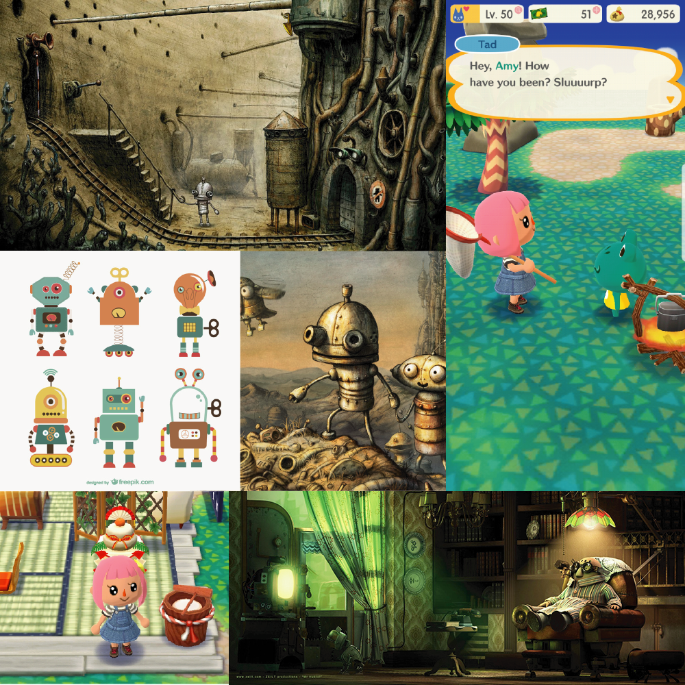
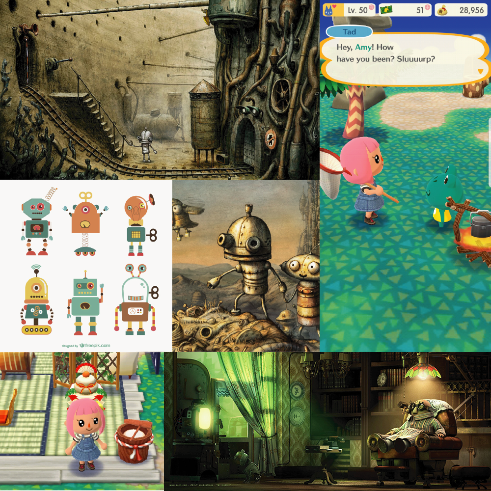

Be-Boop Boolean is a game that was created as a simple, fun way to teach children about boolean logic and promote computer science literacy from a young age. This game was created in Processing as my Programming Basics final project. The full game below has been translated into Javascript using p5.js for web compatibility.
View the source code on my Github .
When brainstorming ideas for this project, I knew I wanted to create a game because I had so much fun creating my other game in Processing, Hungry College Student . I was inspired by the Minecraft Hour of Code, CodeAcademy, and similar CS-related teaching tools.
Understanding computer science is becoming an increasingly important skill in our age of technology, and is something I personally wish I'd been exposed to at a younger age. Originally, I wanted to cover all of the basic concepts of computer science such as data types, variables, for loops, and arrays, but I realized this was too broad of a spectrum and wouldn't allow for in-depth understanding of any topic.
I chose to focus on boolean logic because it is the underlying concept in most programs and the key to more complex ideas in computer science. Boolean logic was also a topic that could be clearly portrayed in a visual format with circuits.
The images above are from an early prototype of the game. There are two main views, the world view where your character walks and interacts with the robots, and the circuit view where you are solving the circuit using logic gates. A challenge was figuring out how to handle mouse and key inputs, as they triggered a different action depending on the view. For example, in the world view, a mouse click is used to interact with the robot NPCs, while in the circuit view, the mouse pointer is used to drag logic gates. I solved this by having a boolean flag that checked whether the user was in a circuit view or not.
 

Thinking back to early classes, boolean logic was often taught with visualizing the operators as gates and circuits. This idea made robots the perfect characters for my game, as well as my personal bias towards robots. For inspiration I looked at Machinarium, Mr. Hublot, and even Animal Crossing for their character style and environment.
These are some of the character sprites I created for the player and robot NPCs. Each robot has a "dead" state before you help them fix their circuit, and an "alive" state, after you help them. I also decided to make the player more feminine in design and color scheme, a subtle show of support for women in tech! The walking animation was one of the last features I implemented for this game, and it required a surprising amount of logic to determine the direction of the player and which sprite in the sequence to display every certain number of frames.